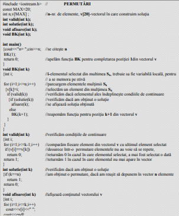
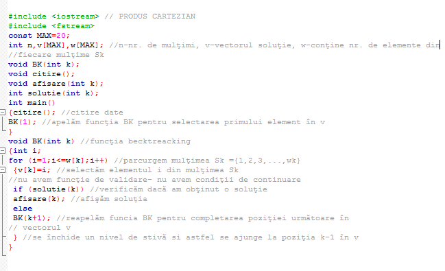
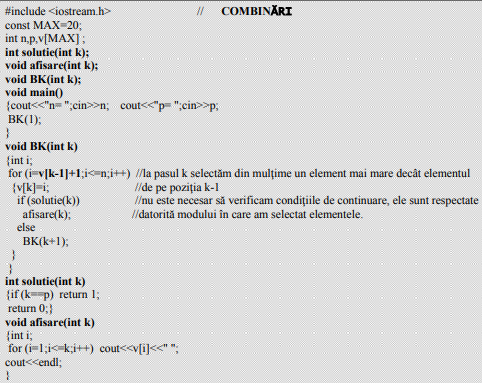
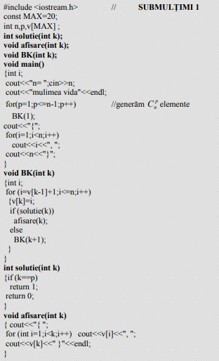

Generare permutări
 |
 |
Să se genereze toate permutările primelor n numere naturale.
Vom genera pe rând soluţiile problemei în vectorul v=(v1,v2,v3,...,vn), unde vkεSk.
Să facem următoarele observaţii:
- Pentru această problemă toate mulţimile Sk sunt identice, Sk={1,2,3,....,n}.
La pasul k selectăm un element din mulţimea Sk.
- Întrucât în cadrul unei permutări elementele nu au voie să se repete
această condiţie reprezentă condiţia de continuare a problemei.
- Obţinem o soluţie în momentul în care completăm vectorul cu n elemente.
Exemplu pentru n=3 S1= S2= S3={1,2,3}
(1,2,3) (1,3,2) (2,1,3) (2,3,1) (3,1,2) (3,2,1)
|
Generare produs cartezian
 |
Se dau n mulţimi, ca cele de mai jos:
S1={1,2,3,...,w1}
S2={1,2,3,...,w2}
.........................
Sn={1,2,3,...,wn}
Se cere să se gnereze produsul lor cartezian.
Exemplu:
pemtru n=3 şi urmăroarele mulţimi
S1={1,2} w1=2
S2={1,2,3} w2=3
S3={1,2} w3=2
produsul cartezian este:
S1 xS2 xS3 ={ (1,1,1),(1,1,2),(1,2,1),(1,2,2),(1,3,1),(1,3,2),
(2,2,1),(2,1,2),(2,2,1),(2,2,2),(2,3,1),(2,3,2)}
Vom memora numărul de elemente al fiecăerei mulţimi Sk , într-un vector w. Soluţiile
le vom construi pe rând în vectorul v |
Generare combinări
Se citesc n şi p numere naturale cu p<=n. Să se genereze toate combinările
de n elemente luate câte p.
Exemplu pentru n=3, p=2. obţinem (1,2), (1,3), (2,3)
Vom genera pe rând soluţiile problemei în vectorul v=(v1,v2,v3,...,vn), unde vkεSk.
Să facem următoarele observaţii:
1. Pentru această problemă toate mulţimile Sk sunt identice, Sk={1,2,3,....,n}.
La pasul k selectăm un element din mulţimea Sk.
2. În cadrul unei combinări elementele nu au voie să se repete.
Să mai observăm şi faptul că dacă la un moment dat am generat de exemplu
soluţia (1,2), combinarea (2,1) nu mai poate fi luată în considerare, ea nu mai
reprezintă o soluţie.
Din acest motiv vom considera că elementele vectorului
reprezintă o soluţie, numai dacă se află în ordine strict crescătoare.
Acestea reprezintă condiţiile de continuare ale problemei.K
3. Oţinem o soluţie în momentul în care vectorul conţine p elemente.
Putem genera toate elementele unei combinări, parcurgând mulţimea {1,2,3,...,n},
apoi să verificăm condiţiile de continuare aşa cum am procedat în cazul permutărilor.
Putem însă îmbunătăţii timpul de execuţie, selectând din mulţimea {1,2,3,...,n}, la
pasul k un element care este în mod obligatoriu mai mare decăt elementul v[k-1],
adică i=v[k-1]+1. |
 |
Generare submultimi
 |
Să se genereze toate submulţimile mulţimii S={1,2,3, ... ,n}.
Exemplu: pentru n=3, S={1,2,3}, submulţimile sunt următoarele:
Φ-mulţimea vidă, {1},{2},{3},{1,2},{1,3},{2,3},{1,2,3}
Să observăm că pentru a obţine toate submulţimile unei mulţimi, este suficient
să generăm pe rând C1n C2n .... C3n
, pentru mulţimea S={1,2,3, ... ,n}, la care trebuie
să adăugăm mulţimea vidă şi mulţimea S.
În aceste condiţii, este suficient să modificăm doar funcţia principală pentru a
genera toate submulţimile şi afişarea datelor ca mulţimi de elemente. Funţiile BK şi
soluţie generează în realitate Cpn elemente. |